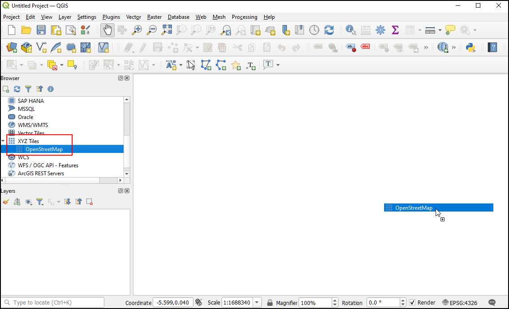
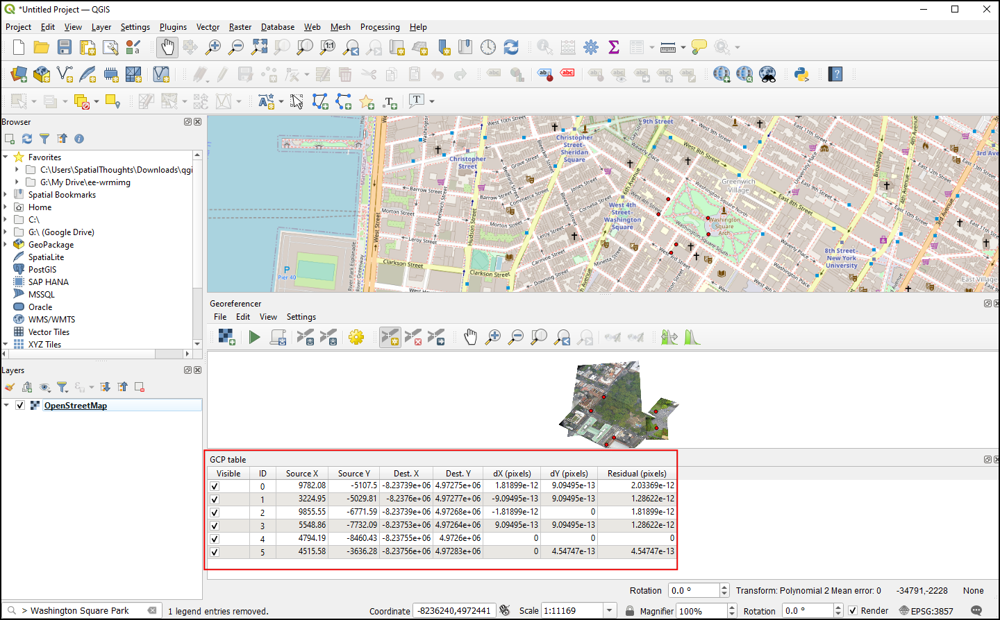
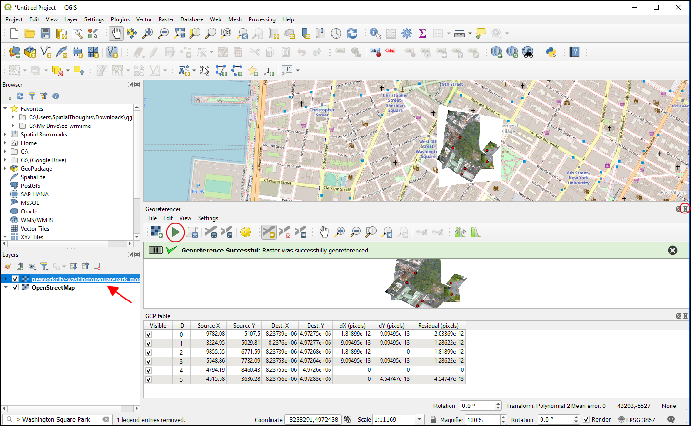

Ujaval Gandhi
Ujaval GandhiGeo-verwijzingen voor satellietbeelden (QGIS3)¶
In de handleiding Topobladen en gescande kaarten voorzien van geoverwijzingen (QGIS3) behandelden wij het basisproces voor geoverwijzingen in QGIS. Die methode omvatte het lezen van de coördinaten van uw gescande kaart en die handmatig invoeren als controlepunten. U zult echter in veel gevallen geen coördinaten hebben afgedrukt op uw kaart, of u probeert een afbeelding te voorzien van geo-verwijzingen. In dat geval kunt u een andere gegevensbron voor geoverwijzingen voor uw invoer gebruiken. Deze handleiding zal u leren hoe u bestaande vrije gegevensbronnen kunt gebruiken in uw proces voor geoverwijzingen.
Overzicht van de taak¶
We zullen geoverwijzingen toevoegen aan hoge resolutie ballon-afbeeldingen met coördinaten voor de verwijzing vanuit OpenStreetMap.
Andere vaardigheden die u zult leren¶
XYZ-tegellagen gebruiken als een basiskaart in QGIS.
Ingebouwde Nominatim-geocodering gebruiken.
Instellen van een gebruikergedefinieerde waarde Geen-gegevens voor een laag.
De gegevens ophalen¶
In deze handleiding zullen we vlieger- en ballonafbeeldingen gebruiken die zijn verzameld door The Public Laboratory. Zij stellen de versies met geo-verwijzingen ook beschikbaar, maar wij zullen een JPG-afbeelding zonder geoverwijzingen downloaden en daarin door het proces voor geo-verwijzingen in QGIS gaan.
Download de JPG-afbeelding van het Washington Square Park, New York. U kunt met rechts klikken op de knop JPG en dan kiezen voor Koppeling opslaan als….
Voor het gemak kunt u direct een kopie van de gegevensset downloaden vanaf de link hieronder:
Procedure¶
We zullen een basiskaart van OpenStreetMap gebruiken om de coördinaten vast te leggen voor geo-verwijzingen. QGIS3 heeft een ingebouwde ondersteuning voor tegellagen. Deze zijn over het algemeen bekend als ‘XYZ’-lagen omdat zij zijn gemaakt met individuele kaarttegels voor elk zoomniveau (z) op een raster met x,y-coördinaten. U kunt de laag
OpenStreetMapvinden onder XYZ Tiles in het paneel Browser. Sleep de laag naar het hoofdvenster. Eenmaal geladen, let op het Coördinaten Referentie Systeem (CRS) voor deze laag in de rechter benedenhoek. Het is ingesteld alsEPSG 3857 Pseudo Mercator. Dit is belangrijk omdat de coördinaten die we afleiden van deze laag gedurende het maken van geo-verwijzingen in dit CRS zijn.

Notitie
Bekijk deze pagina voor meer details over XYZ-lagen en hoe andere basiskaarten toe te voegen in QGIS.
De afbeelding waar we geoverwijzingen aan zullen toevoegen is voor het
Washington Square Park, New York. U kunt zoomen/verschuiven om het park op de kaart te zoeken. Maar dat is tijdrovend en niet praktisch. Vanaf QGIS versie 3.20 en hoger is er ingebouwde ondersteuning voor de op OpenStreetMap gebaseerde Nominatim Geocoder. Klik op de zoekbalk aan de linkeronderzijde van het venster van QGIS. Gebruik het zoeken naar de plaats met>` om dit te gebruiken als een voorvoegsel voor de geocodering. Zoeken naar ``> Washington Square Parkzal een lijst met adressen weergeven om uit te kiezen. Klik op het eerste adres.

Het kaartvenster zal worden gecentreerd op het Square Park. Laten we nu geoverwijzingen gaan toevoegen. Start de Georeferencer via .
Notitie
Vanaf QGIS versie 3.26 en hoger kan de Georeferencer worden gestart via .

We moeten, om geoverwijzingen toe te voegen aan een luchtfoto, punten van coördinaten kiezen vanaf OpenStreetMap, laten we dus eerst het gereedschap Georeferencer vastzetten in het hoofdvenster van QGIS. Selecteer Georeferencer configureren via .

Selecteer Georeferencer venster ‘docked’ tonen’ en klik op OK.

Het venster van Georeferencer zal worden vastgezet aan de onderzijde van het hoofdvenster van QGIS. Laten we het bestand met de afbeelding laden door te klikken op het pictogram Raster openen in het venster van Georeferencer en navigeer naar het gedownloade JPG-bestand. Klik op Openen.

Voordat we Grond ControlePunten (GCP) kunnen toevoegen, moeten we de Instellingen voor transformatie instellen. Klik op het pictogram Instellingen voor transformatie om het dialoogvenster Transformatie instellingen te openen. Kies, in het dialoogvenster Transformatie instellingen, het Transformatie type als
Polynoom 2. Bekijk de documentatie van QGIS om meer te leren over de verschillende types voor transformatie en hun gebruik. Zoals eerder vermeld is onze basiskaart in het CRSEPSG 3857 Pseudo Mercator, dus stel dat in als het Doel SRS. U kunt nu de naam Uitvoer raster laten staan op de standaard en kiesLZWals de Compressie. Selecteer Gebruik 0 voor transparantie indien nodig. Selecteer :GCP-punten opslaan om de punten als een afzonderlijk bestand op te slaan voor toekomstige doelen. Zorg er voor dat de optie Na afloop in QGIS laden is geselecteerd. Klik op OK.

Klik nu op de knop Punt toevoegen op de werkbalk en selecteer een eenvoudig te identificeren locatie op de afbeelding. Hoeken, kruisingen, palen etc., zijn goede controlepunten. Als u klikt op een locatie van een controlepunt op de afbeelding, zult u een pop-up zien die u vraagt de coördinaten van de kaart in te voeren. Klik op de knop Van kaartvenster.

Klik, op de laag
OpenStreetMap, op de exacte locatie in de verwijzingslaag. De coördinaten zullen automatisch worden gevuld vanuit uw klik op het kaartvenster. Klik op Ok.

Notitie
Tip: Bij het selecteren van een GCP op een gebouw, kies dan altijd een punt aan de onderzijde van het gebouw. De meeste lucht- en satellietafbeeldingen hebben leunende gebouwen, dus zal het kiezen van een punt op het dak fouten veroorzaken.
Soortgelijk, kies tenminste 6 punten op de afbeelding en voeg hun coördinaten toe vanuit de verwijzingslaag. Als u eenmaal het minimaal vereiste aantal punten hebt toegevoegd voor de transformatie, zult u zien dat de GCP’s nu niet-nul
dX,dYenResidualfoutwaarden hebben. Als een bepaald GCP ongewoon veel hoge foutwaarden heeft, betekent dat meestal een menselijke fout bij het invoeren van de waarden voor de coördinaten. U kunt die GCP dus verwijderen en opnieuw vastleggen.

Als u tevreden bent met de GCPs, klik dan op Geoverwjzingen starten. Dit zal het proces starten voor het vervormen van de afbeelding met de GCP’s en het doelraster maken. Als het proces eenmaal is voltooid zult u de laag zien geladen in QGIS. Sluit het venster van Georeferencer.

Klik nu op het pictogram Paneel Laag opmaken openen en schakel naar de tab Transparantie. Voeg
255toe als de :guilabel:`Extra waarde ‘geen data’. Dit zal de gehele rand rondom de afbeelding verwijderen. Nu zult u uw afbeelding met geoverwijzingen netjes overlegd zien op de basislaag.

{kind=link}
Notitie
8-bit-afbeeldingen hebben pixelwaarden in het bereik van 0-255. 0 is zwart en 255 is wit.
If you want to give feedback or share your experience with this tutorial, please comment below. (requires GitHub account)